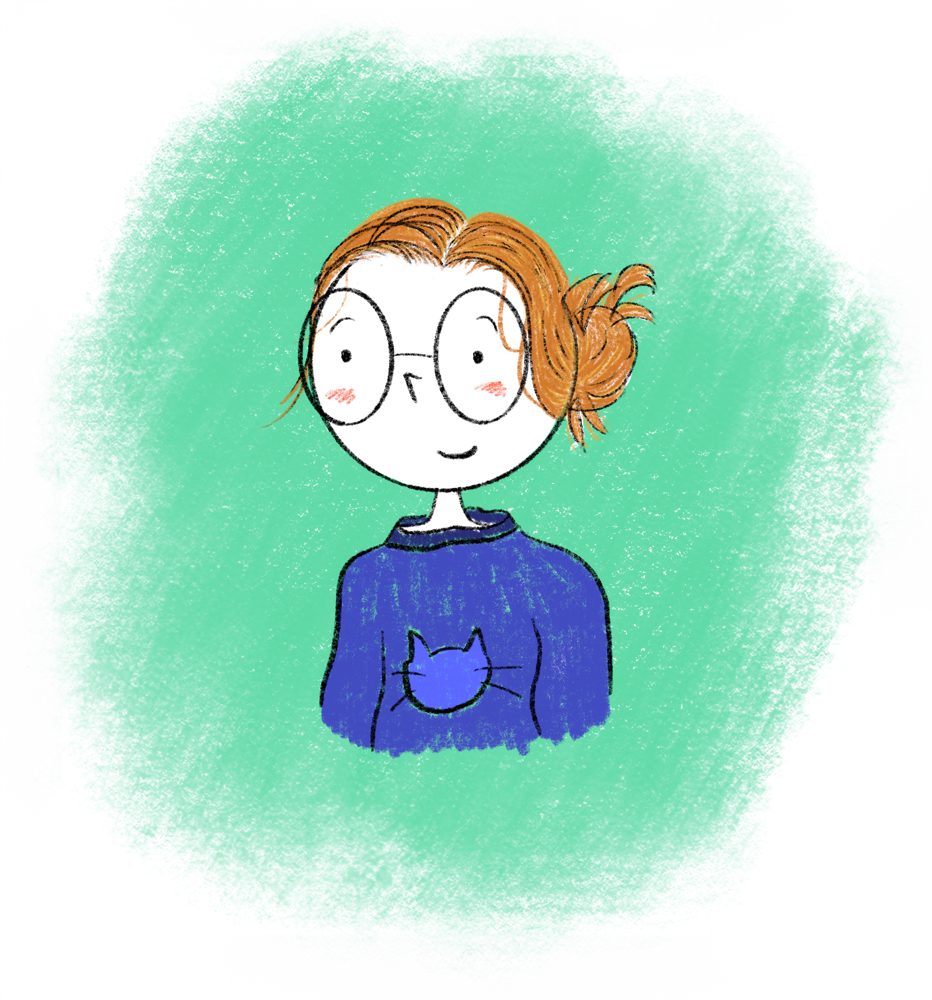
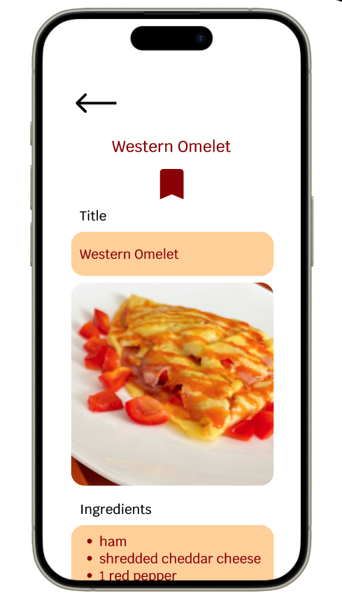
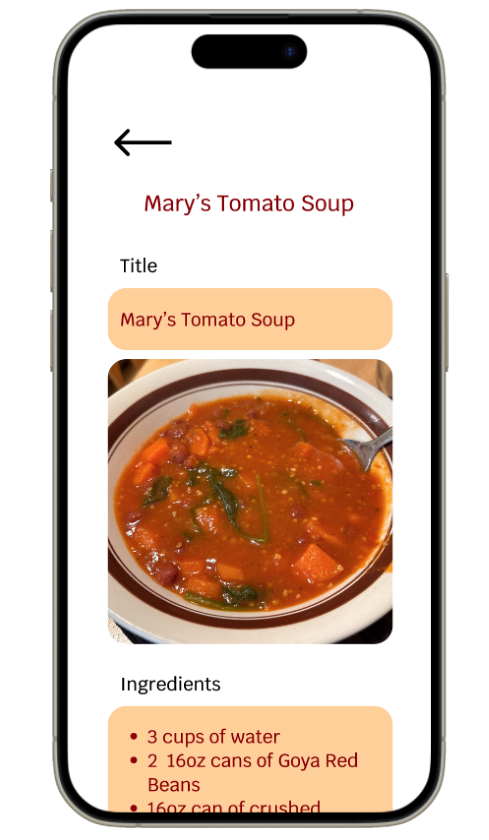
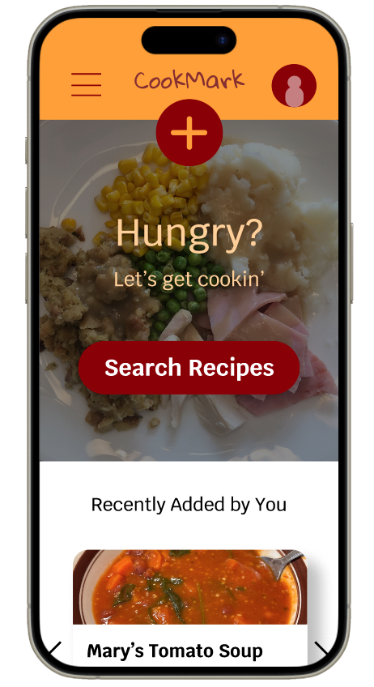
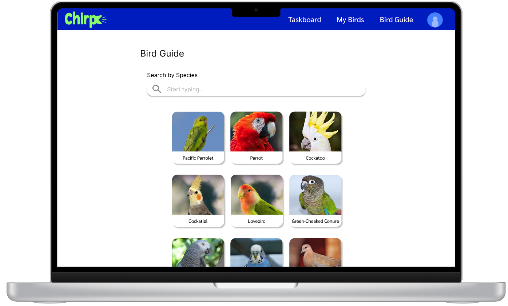

Mary Pyrdol
Portfolio
Resume/CV
About
Hi, I'm Mary.
I'm

  
CookMark: Personal Recipe Book
Case Study
Imagining a way to protect recipes loved through generations
and easily share them with loved ones.
Chirp
Case Study
Imagining a way to protect recipes loved through generations
and easily share them with loved ones.
